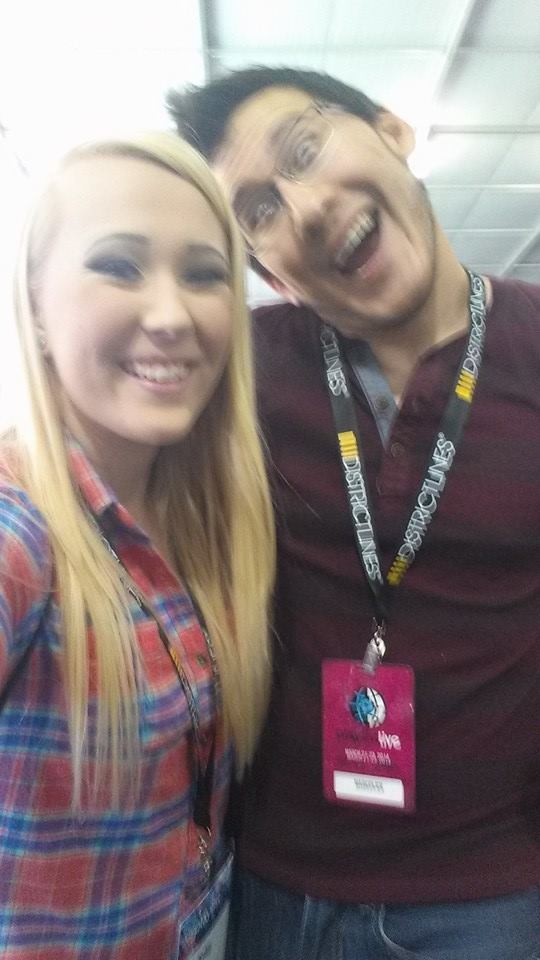

My orchestra friends and I in high school after a competition.
A photo of Markiplier and I when I met him at Playlist Live Orlando in 2014.
I dedicated six years of my life to mastering the cello, beginning my musical journey in 6th grade and continuing through to 11th grade. Throughout these formative years, I poured my heart and soul into my craft, honing my skills and embracing the beauty of classical music. My dedication and passion for the cello led me to earn a coveted spot in the top orchestra at my high school, where I had the privilege of collaborating with talented musicians and performing at prestigious events. These years of musical exploration not only enriched my life but also instilled in me a profound appreciation for discipline, teamwork, and the transformative power of music.
If you know you know. In 2014, my world collided with digital stardom when I had the unforgettable opportunity to meet Markiplier at Playlist Live. As my favorite YouTuber at the time, Markiplier's infectious energy and genuine charisma captivated me, inspiring my own journey in the online world. Markiplier, also known as Mark Edward Fischbach, is a renowned content creator known for his Let's Play videos, comedic sketches, and philanthropic efforts. With millions of loyal followers, he has left an indelible mark on the YouTube community, using his platform to entertain, inspire, and make a positive impact.
While most people undergo the rite of passage of wisdom teeth removal, I've been spared from this common dental dilemma. It's a quirky fact that often surprises friends and family, serving as a reminder of the fascinating diversity found within the human experience.